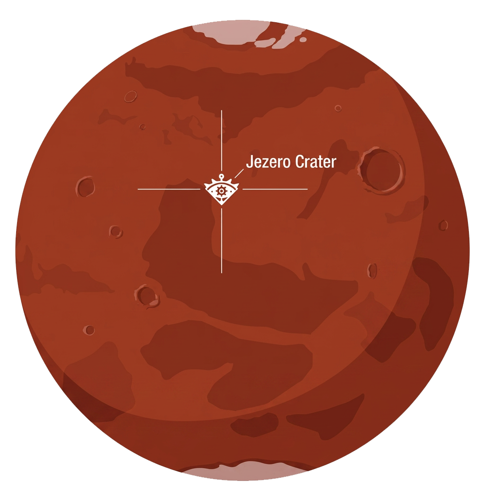
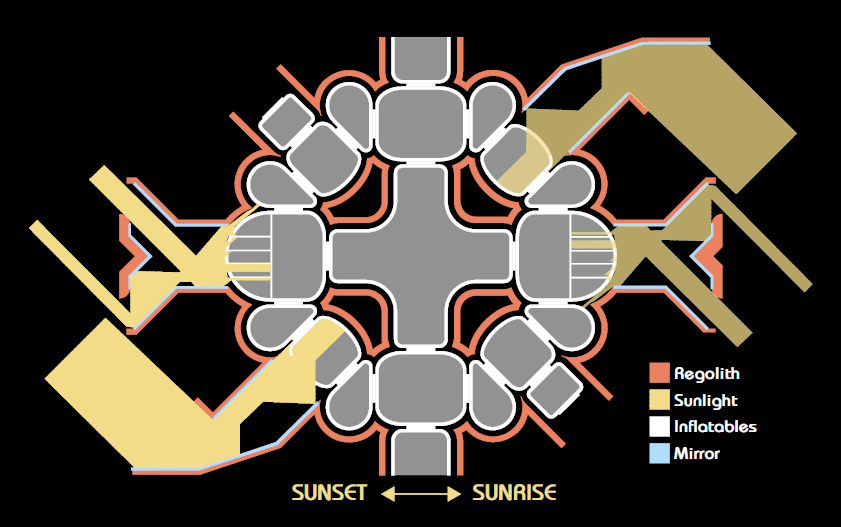
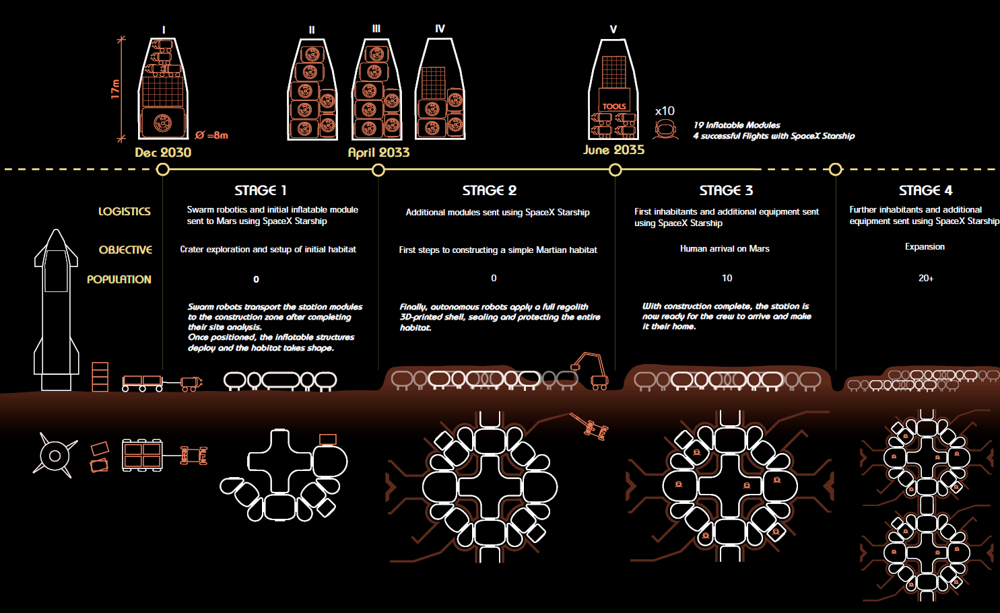
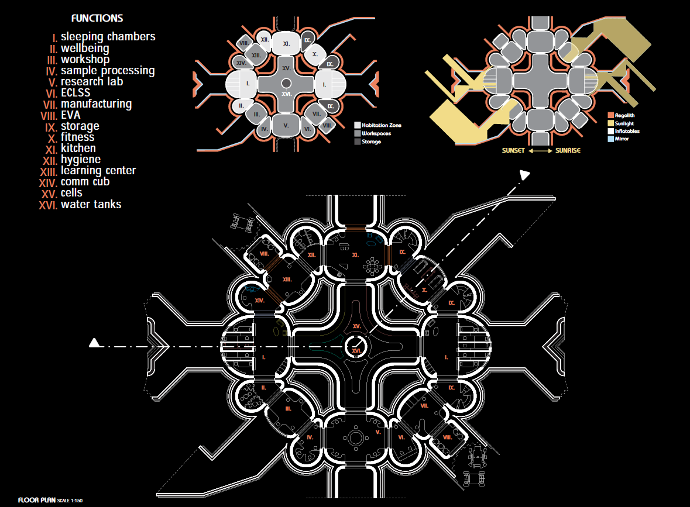
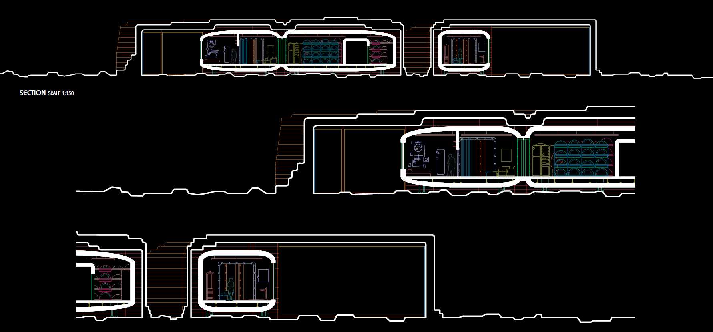
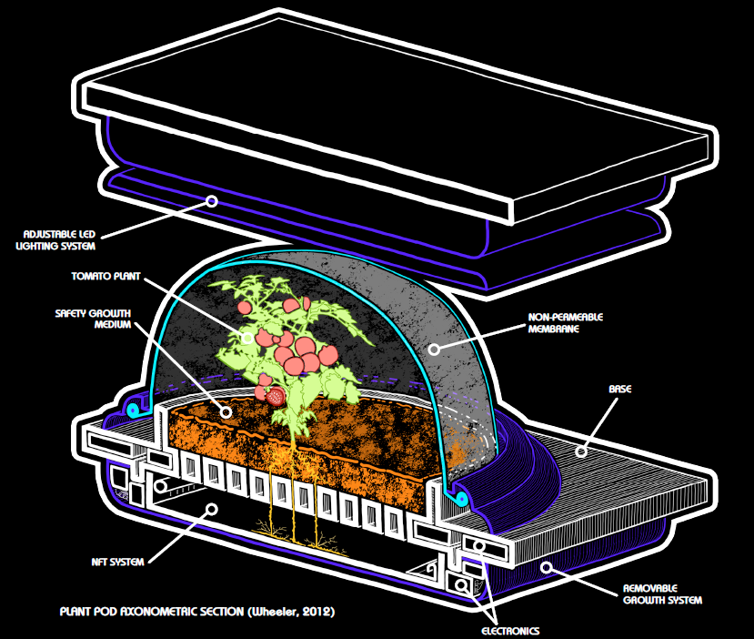
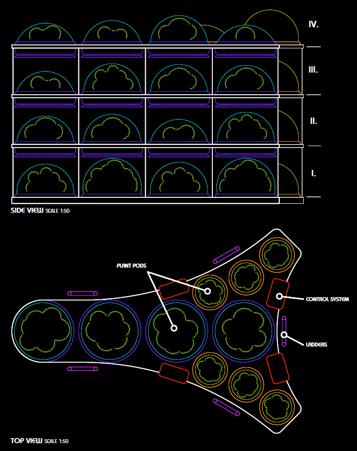
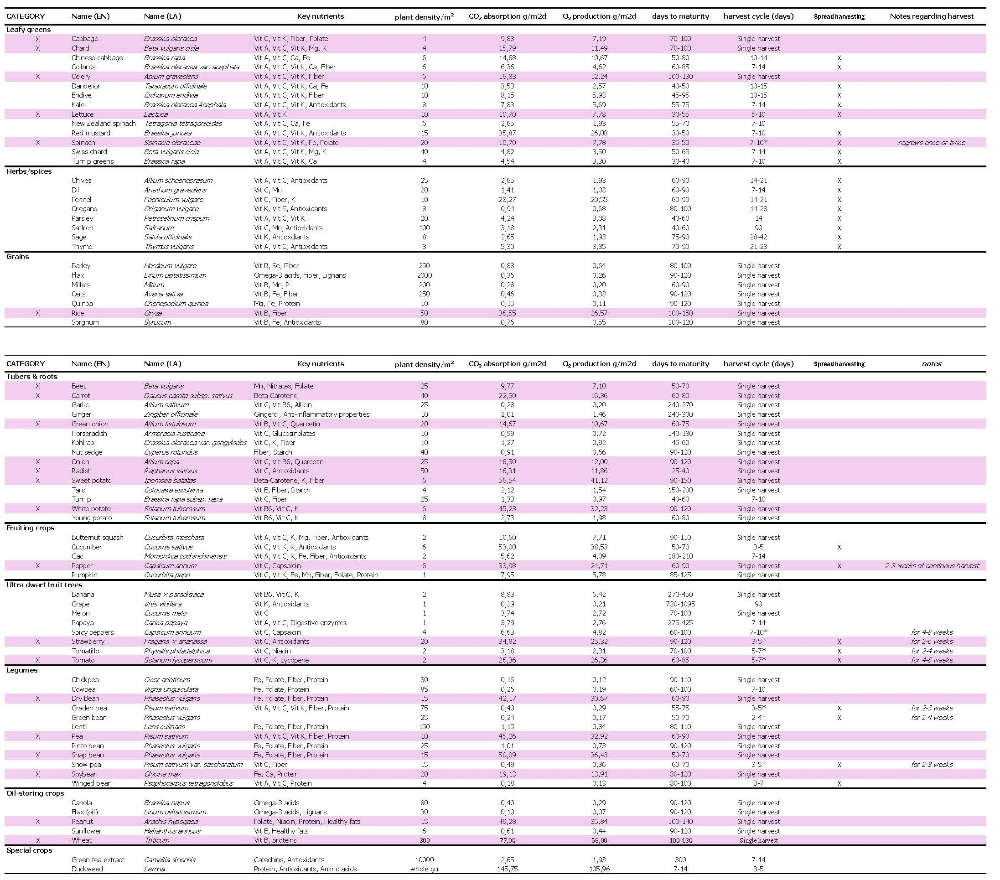

Mars Surface Habitat · Long-Duration · Research
A self-sustaining modular habitat for human settlement and food production on Mars.
Eyes of Eden is a Mars surface habitat designed to establish permanent human presence on the Red Planet. The project integrates pressurized domed modules with integrated closed-loop ecological life support systems, enabling long-duration missions with in-situ food production and resource autonomy.
The modular design allows for incremental expansion and adaptation to varied Martian terrain, while centralized power and life support systems provide resilience and cross-module redundancy for operational continuity.
Mission & Concept
Eyes of Eden achieves sustainable human settlement on Mars by solving three critical challenges: safe long-term habitation in extreme environment, reliable food production independent of Earth resupply, and efficient resource cycling to minimize dependence on imported consumables.
The project prioritizes crew psychology and quality of life through natural lighting design, interior plant integration, and modular social spaces that mitigate isolation during multi-year missions.
The habitat name reflects both purpose—providing refuge and hope on an alien world—and function: the integrated greenhouses serve as psychological anchors and reminder of Earth's living systems adapted to an extreme Martian context.
Modularity allows the settlement to evolve with changing mission requirements, adding research modules, storage, recreational facilities, or medical facilities without disrupting existing operations.
Site & Location
The habitat is positioned on the Olympus Mons region, which offers a balance of elevation (allowing better radiation and dust protection), accessible subsurface ice deposits, and terrain suitable for solar array deployment and thermal radiator operation. The sloped terrain facilitates water runoff management and allows for terraced module arrangement.

Site analysis — topography, solar exposure, subsurface resources
Lighting Concept & Launch Phases
Natural lighting is integrated into each dome through skylights positioned at optimal angles to provide consistent illumination while minimizing direct radiation exposure. The launch schedule distributes modules across multiple mission phases, allowing for staged assembly and testing of interconnections.

Interior lighting — natural skylights + LED grow lighting integration

Launch & deployment sequence — modular arrival schedule
Habitat Modules
Each primary habitat module is a pressurized geodesic dome 18 meters in diameter, designed to withstand Martian dust storms and maintain internal pressure. Modules are arranged in a radial cluster, reducing the exposed perimeter and centralizing utility connections for power, water, and atmosphere management.

Module interconnections — floor plan arrangement

Vertical section — interior height and resource systems
CELSS — Closed-Loop Life Support
Each module integrates a bio-regenerative life support system (BLSS) with 800 m² of integrated growing area. The system uses aeroponics and nutrient film techniques for high-yield crop production in minimal space, with continuous CO₂ capture from crew breathing and food production targets of 3,200 kcal per day across the full habitat.
Water is recycled with 95% efficiency through multiple stages of filtration, heat recovery, and transpiration collection from growing areas. Waste treatment integrates composting and closed-loop processing to eliminate export dependency—all human waste becomes nutrient source for future growing cycles.

Bio-Regenerative Life Support pod (BLSS) — pressurized module with integrated greenhouses

CELSS architecture — plant pod arrangement (top/side view, scale 1:50)
Crop Yield Data

Full Project Overview
Eyes of Eden — Complete Documentation & Design Development